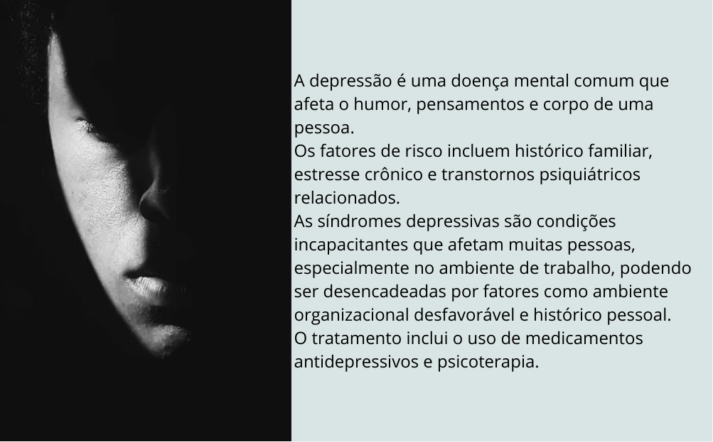

21.18.44_e0a98f4e.jpg) Home
Quem somos
Depoimentos
Cadastro
Home
Quem somos
Depoimentos
Cadastro
Seja Bem vindo

Finalidade do projeto
Este ambiente foi desenvolvido com a finalidade de prestar apoio emocional a pessoas que estão enfrentando desafios relacionados a saúde mental,
auxiliando assim, o retorno às atividades no mercado de trabalho e sociais pós-pandemia, além de proporcionar um ambiente acolhedor.
Entenda como funciona a reorganização da mente
Créditos: A REORGANIZAÇÃO DA NOSSA MENTE | ANSIEDADE BRASIL ( Dr. Isaac Efraim, Médico Psiquiatra e Terapeuta (CRM 38124))
Saiba mais
De acordo com Organização Mundial da Saúde (OMS) e da Organização Internacional do Trabalho (OIT) (CNN Brasil, 2022) cerca de 15% dos trabalhadores vivem com um transtorno.
O ambiente de trabalho é um dos responsáveis pelo desencadeamento ou agravamento de doenças mentais como ansiedade, síndrome do pânico, burnout e depressão.
Estes transtornos foram um dos que mais afastam trabalhadores de suas atividades laborais, conforme apontou o Observatório de Segurança e Saúde do Trabalho no ano de 2021,
em que cerca de 13 mil brasileiros tiveram a concessão de benefícios em que a causa foi por transtornos mentais e comportamentais.
